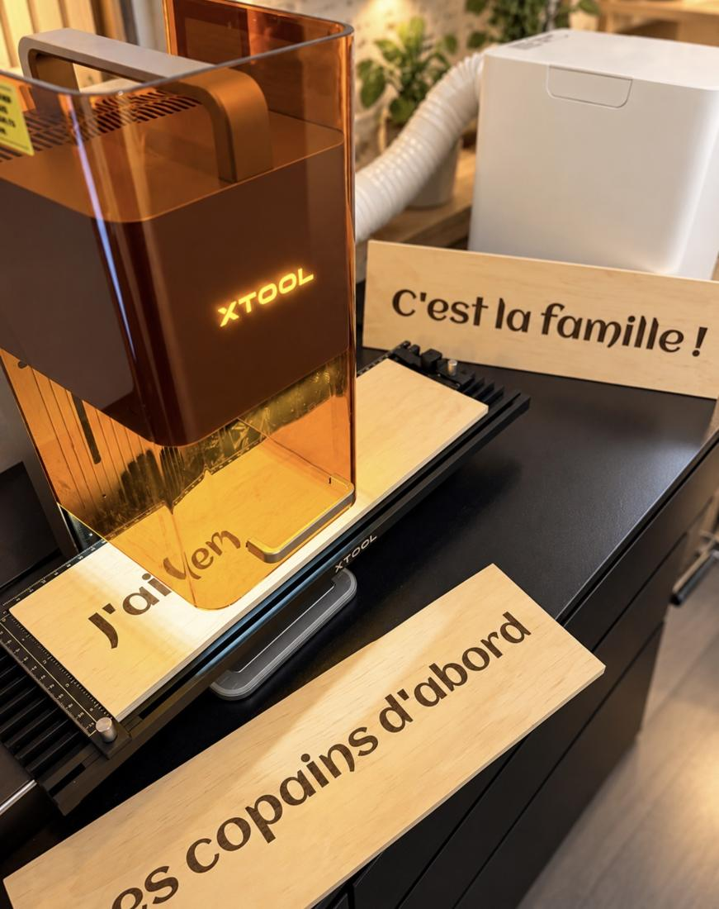

Gravure laser
Des pièces uniques, gravées à l'atelier
Panneaux de décoration, cadeaux d'invités, objets d'entreprise. Une gravure nette et durable, même en petite quantité.
- Bois, cuir, ardoise, bambou et plus
- Prénoms, dates, logos, textes sur mesure
- À partir d'une seule pièce